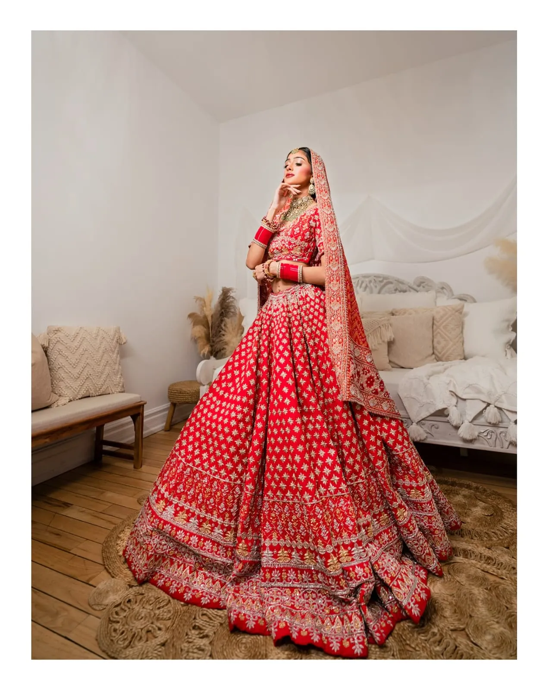
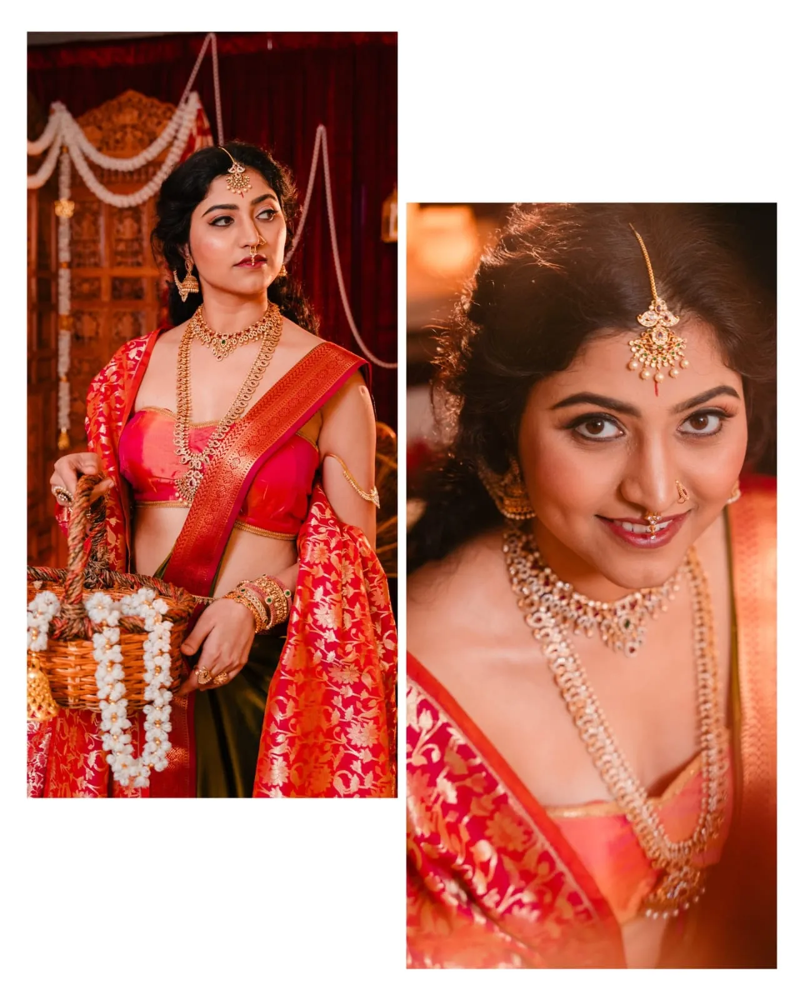
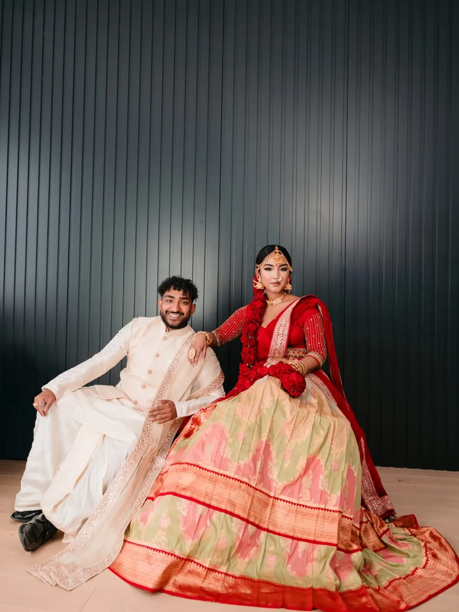

Visual Storyteller & Cinematographer
The Art of
Feeling.
Founded by Mathusa Vinayakamoorthy, KVM Creations is a luxury studio dedicated to capturing genuine emotions, natural elegance, and unforgettable stories through photography and film.
Inquire Collection →

Our Philosophy
How It Looks — How It Feels
With over 6 years of expertise in fine art photography and 4 years in cinematic videography, Mathusa Vinayakamoorthy approaches every celebration with a deep focus on authentic expressions and meticulous detail.
Over the years, capturing weddings, cultural celebrations, engagements, and special milestones has taught us that every moment deserves to be preserved with grace, poetry, and truth.
"My goal is not only to capture how a moment looks, but also how it feels — preserving your story to cherish for generations."
Meet Mathu
Mathusa Vinayakamoorthy
Behind KVM Creations is Mathusa Vinayakamoorthy ("Mathu") — a passionate visual storyteller driven by human connection and authentic emotion.
Alongside still photography, Mathu crafts bespoke cinematic films that bring memories back to life through emotion, light, and narrative rhythm. Every couple and every celebration possesses a unique soul — and our mission is to preserve those stories for a lifetime.
Explore Portfolio Gallery →